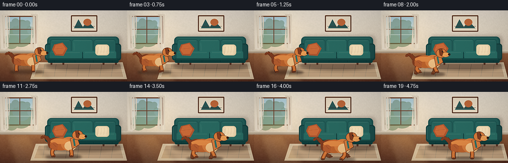
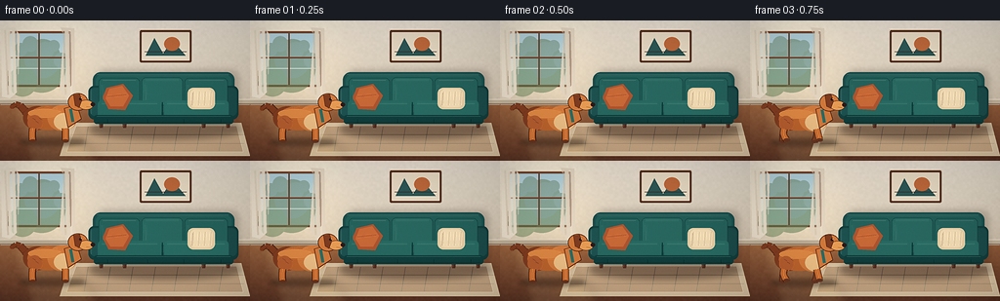
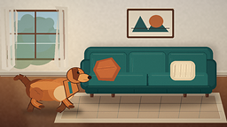
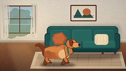
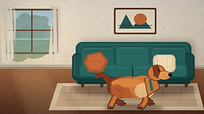
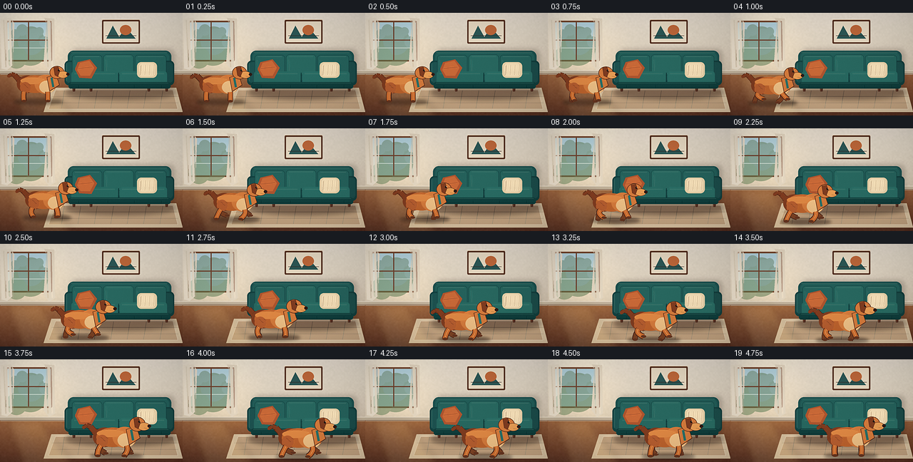

CODING AGENTS AS PIXEL WORLD MODELS
traex/DeepSeek-V4.1-Flash · dynamic_spatial_relationship_0001
点击播放 · 原生 RGB 像素
逐轮保存的候选
回放视频、检查图与代码变化。
每份候选均可单独播放。实际图片检查记录在下方工具轨迹中。
候选 01播放与检查图
点击播放 · 原生 RGB 像素


展开代码变化
--- 上一保存版本
+++ 本次保存版本
@@ -0,0 +1,478 @@
+from __future__ import annotations
+
+import math
+from pathlib import Path
+
+import numpy as np
+from PIL import Image, ImageDraw, ImageEnhance, ImageFilter
+
+import artifact_io
+
+
+ROOT = Path(__file__).resolve().parent
+W, H = 256, 144
+SS = 4
+HW, HH = W * SS, H * SS
+FPS = 4.0
+FRAMES = 20
+
+
+def smoothstep(value: float) -> float:
+ value = max(0.0, min(1.0, value))
+ return value * value * (3.0 - 2.0 * value)
+
+
+def rgba(color: tuple[int, int, int], alpha: int = 255) -> tuple[int, int, int, int]:
+ return (*color, alpha)
+
+
+def mix(a: tuple[int, int, int], b: tuple[int, int, int], amount: float) -> tuple[int, int, int]:
+ return tuple(round(x + (y - x) * amount) for x, y in zip(a, b))
+
+
+def rounded_rect(draw: ImageDraw.ImageDraw, box, radius, fill, outline=None, width=1):
+ draw.rounded_rectangle(
+ tuple(round(v * SS) for v in box),
+ radius=round(radius * SS),
+ fill=fill,
+ outline=outline,
+ width=round(width * SS),
+ )
+
+
+def ellipse(draw: ImageDraw.ImageDraw, box, fill, outline=None, width=1):
+ draw.ellipse(
+ tuple(round(v * SS) for v in box),
+ fill=fill,
+ outline=outline,
+ width=round(width * SS),
+ )
+
+
+def polygon(draw: ImageDraw.ImageDraw, points, fill, outline=None, width=1):
+ scaled = [(round(x * SS), round(y * SS)) for x, y in points]
+ draw.polygon(scaled, fill=fill)
+ if outline is not None:
+ draw.line(scaled + [scaled[0]], fill=outline, width=round(width * SS), joint="curve")
+
+
+def line(draw: ImageDraw.ImageDraw, points, fill, width=1):
+ draw.line(
+ [(round(x * SS), round(y * SS)) for x, y in points],
+ fill=fill,
+ width=max(1, round(width * SS)),
+ joint="curve",
+ )
+
+
+def make_background() -> Image.Image:
+ yy, xx = np.mgrid[0:HH, 0:HW]
+ yn = yy / HH
+ xn = xx / HW
+
+ wall_top = np.array([232, 224, 211], dtype=float)
+ wall_bottom = np.array([205, 192, 173], dtype=float)
+ wall_mix = np.clip(yn / 0.61, 0.0, 1.0)[..., None]
+ wall = wall_top * (1.0 - wall_mix) + wall_bottom * wall_mix
+
+ floor_top = np.array([147, 99, 68], dtype=float)
+ floor_bottom = np.array([91, 55, 42], dtype=float)
+ floor_mix = np.clip((yn - 0.59) / 0.41, 0.0, 1.0)[..., None]
+ floor = floor_top * (1.0 - floor_mix) + floor_bottom * floor_mix
+
+ floor_mask = (yy >= 0.585 * HH)[..., None]
+ image = wall * (1.0 - floor_mask) + floor * floor_mask
+
+ # Soft window daylight and a gentle falloff toward the right of the room.
+ daylight = np.exp(-((xn - 0.20) ** 2 / 0.035 + (yn - 0.36) ** 2 / 0.24))
+ image += daylight[..., None] * np.array([24.0, 20.0, 11.0])
+ image -= np.clip((xn - 0.70) * 12.0, 0.0, 12.0)[..., None]
+
+ rng = np.random.default_rng(37)
+ coarse = rng.normal(0.0, 1.0, (72, 128, 1)).astype(np.float32)
+ coarse_img = Image.fromarray(
+ np.clip(128 + coarse[..., 0] * 24, 0, 255).astype(np.uint8), "L"
+ ).resize((HW, HH), Image.Resampling.BICUBIC)
+ texture = np.asarray(coarse_img, dtype=float) - 128.0
+ image += texture[..., None] * 0.075
+
+ image = np.clip(image, 0, 255).astype(np.uint8)
+ base = Image.fromarray(image, "RGB").convert("RGBA")
+ draw = ImageDraw.Draw(base, "RGBA")
+
+ # Wall baseboard.
+ rounded_rect(draw, (0, 80.8, 256, 86.5), 1.2, (191, 177, 155, 255))
+ line(draw, [(0, 81.0), (256, 81.0)], (235, 226, 208, 230), 0.8)
+ line(draw, [(0, 85.5), (256, 85.5)], (119, 82, 63, 150), 0.7)
+
+ # Window with a slim walnut frame.
+ rounded_rect(draw, (8, 11, 73, 68), 2.2, (119, 78, 58, 255))
+ rounded_rect(draw, (10.2, 13.2, 70.8, 65.8), 1.2, (181, 205, 204, 255))
+
+ glass = Image.new("RGBA", (HW, HH), (0, 0, 0, 0))
+ gd = ImageDraw.Draw(glass, "RGBA")
+ for y in range(14, 66):
+ amount = (y - 14) / 52
+ color = mix((179, 207, 218), (221, 225, 208), amount)
+ line(gd, [(10.5, y), (70.5, y)], rgba(color, 255), 1.1)
+ ellipse(gd, (18, 24, 67, 74), (112, 135, 99, 150))
+ ellipse(gd, (25, 19, 62, 59), (90, 120, 91, 110))
+ ellipse(gd, (8, 47, 38, 78), (100, 129, 88, 125))
+ for bx, by, br in [(21, 30, 7), (31, 24, 8), (46, 31, 9), (55, 26, 6), (63, 41, 8)]:
+ ellipse(gd, (bx - br, by - br, bx + br, by + br), (77, 106, 79, 80))
+ # A faint outdoor horizon and sunlit leaves keep the glass from looking flat.
+ line(gd, [(11, 49), (70, 49)], (225, 230, 211, 120), 1.0)
+ base = Image.alpha_composite(base, glass)
+ draw = ImageDraw.Draw(base, "RGBA")
+
+ line(draw, [(39.7, 13), (39.7, 66)], (112, 73, 54, 255), 1.5)
+ line(draw, [(10, 38), (71, 38)], (112, 73, 54, 255), 1.4)
+ line(draw, [(10, 16), (10, 65)], (232, 221, 201, 210), 0.7)
+ line(draw, [(70, 16), (70, 65)], (91, 59, 47, 200), 0.7)
+
+ # Cream curtains with soft vertical folds.
+ curtain = Image.new("RGBA", (HW, HH), (0, 0, 0, 0))
+ cd = ImageDraw.Draw(curtain, "RGBA")
+ cd.polygon(
+ [(round(x * SS), round(y * SS)) for x, y in
+ [(1, 8), (15, 7), (20, 15), (18, 73), (10, 80), (2, 78)]],
+ fill=(232, 222, 204, 245),
+ )
+ cd.polygon(
+ [(round(x * SS), round(y * SS)) for x, y in
+ [(62, 7), (76, 8), (77, 76), (69, 81), (61, 71), (65, 15)]],
+ fill=(226, 214, 194, 245),
+ )
+ for x0, x1, color in [
+ (5, 8, (205, 192, 171, 100)),
+ (11, 13, (244, 235, 219, 150)),
+ (16, 18, (193, 177, 154, 95)),
+ (65, 67, (203, 188, 166, 100)),
+ (71, 73, (241, 231, 213, 130)),
+ ]:
+ cd.line(
+ [(round(x0 * SS), round(10 * SS)), (round(x1 * SS), round(76 * SS))],
+ fill=color,
+ width=round(2.0 * SS),
+ )
+ base = Image.alpha_composite(base, curtain)
+ draw = ImageDraw.Draw(base, "RGBA")
+
+ # Framed abstract print above the sofa.
+ rounded_rect(draw, (143, 10, 196, 43), 1.5, (90, 58, 45, 255))
+ rounded_rect(draw, (145, 12, 194, 41), 0.7, (228, 216, 195, 255))
+ polygon(draw, [(149, 36), (158, 18), (167, 34), (176, 20), (190, 36)], (52, 91, 89, 235))
+ ellipse(draw, (168, 17, 184, 31), (185, 108, 67, 235))
+ line(draw, [(148, 32), (191, 32)], (57, 48, 43, 150), 0.7)
+ line(draw, [(142.4, 9.6), (196.6, 9.6)], (215, 178, 132, 150), 0.5)
+
+ # Rug, laid in perspective under the sofa.
+ polygon(
+ draw,
+ [(72, 105), (247, 105), (256, 139), (61, 139)],
+ (215, 195, 165, 238),
+ )
+ polygon(
+ draw,
+ [(78, 108), (242, 108), (249, 135), (68, 135)],
+ (196, 167, 135, 160),
+ outline=(242, 225, 198, 160),
+ width=0.6,
+ )
+ for x in (90, 113, 136, 159, 182, 205, 228):
+ line(draw, [(x, 109), (x - 4, 134)], (110, 126, 119, 55), 0.55)
+ for y in (117, 126):
+ line(draw, [(72, y), (250, y)], (114, 100, 87, 48), 0.5)
+
+ # Warm sun pools from the left-hand window.
+ glow = Image.new("RGBA", (HW, HH), (0, 0, 0, 0))
+ gd = ImageDraw.Draw(glow, "RGBA")
+ gd.polygon(
+ [(round(x * SS), round(y * SS)) for x, y in
+ [(11, 86), (56, 86), (101, 144), (30, 144)]],
+ fill=(255, 221, 154, 32),
+ )
+ gd.polygon(
+ [(round(x * SS), round(y * SS)) for x, y in
+ [(18, 87), (29, 87), (58, 143), (39, 143)]],
+ fill=(255, 237, 190, 28),
+ )
+ glow = glow.filter(ImageFilter.GaussianBlur(5 * SS))
+ base = Image.alpha_composite(base, glow)
+ return base
+
+
+def draw_sofa(image: Image.Image) -> Image.Image:
+ # Cast shadow on the wall and floor.
+ shadow = Image.new("RGBA", image.size, (0, 0, 0, 0))
+ sd = ImageDraw.Draw(shadow, "RGBA")
+ rounded_rect(sd, (99, 51, 244, 109), 8, (57, 39, 31, 58))
+ ellipse(sd, (91, 102, 249, 121), (47, 32, 27, 90))
+ shadow = shadow.filter(ImageFilter.GaussianBlur(3.2 * SS))
+ image = Image.alpha_composite(image, shadow)
+ draw = ImageDraw.Draw(image, "RGBA")
+
+ # Walnut legs.
+ for x in (101, 125, 206, 231):
+ polygon(draw, [(x, 101), (x + 5, 101), (x + 4, 110), (x + 1, 110)], (78, 48, 38, 255))
+ line(draw, [(x + 1.2, 102), (x + 1.5, 109)], (157, 105, 72, 150), 0.55)
+
+ # Sofa back and arms.
+ rounded_rect(draw, (95, 53, 240, 98), 8.0, (36, 82, 80, 255))
+ rounded_rect(draw, (98, 55.5, 237, 94), 6.5, (42, 94, 90, 255))
+ rounded_rect(draw, (90.5, 67, 108.5, 101.5), 6.0, (28, 69, 68, 255))
+ rounded_rect(draw, (226.5, 67, 244, 101.5), 6.0, (27, 65, 64, 255))
+ rounded_rect(draw, (92.3, 69, 106.4, 98), 5.0, (37, 84, 82, 255))
+ rounded_rect(draw, (228.3, 69, 242.2, 98), 5.0, (35, 78, 76, 255))
+
+ # Three upholstered back cushions.
+ cushions = [(101, 59, 143, 87), (145, 58.5, 187, 87), (189, 59, 233, 87)]
+ for index, box in enumerate(cushions):
+ shade = (45, 99, 94, 255) if index != 1 else (48, 104, 98, 255)
+ rounded_rect(draw, box, 4.5, shade, outline=(25, 65, 64, 220), width=0.55)
+ x0, y0, x1, y1 = box
+ line(draw, [(x0 + 4, y0 + 2.2), (x1 - 4, y0 + 2.2)], (105, 145, 132, 120), 0.6)
+ line(draw, [(x0 + 3.5, y0 + 7), (x0 + 4.5, y1 - 4)], (130, 161, 145, 45), 0.5)
+
+ # Seat cushions with a clear horizontal silhouette.
+ rounded_rect(draw, (100, 82, 165, 101), 4.0, (47, 104, 98, 255))
+ rounded_rect(draw, (168, 82, 234, 101), 4.0, (49, 108, 101, 255))
+ line(draw, [(166, 84), (166, 99)], (20, 55, 55, 190), 1.0)
+ line(draw, [(104, 85), (161, 85)], (115, 153, 137, 95), 0.6)
+ line(draw, [(171, 85), (230, 85)], (120, 158, 141, 95), 0.6)
+
+ # Front rail and piping.
+ rounded_rect(draw, (96, 97, 239, 106), 3.0, (25, 66, 64, 255))
+ line(draw, [(99, 98.2), (236, 98.2)], (75, 126, 114, 140), 0.55)
+ line(draw, [(99, 104.3), (236, 104.3)], (17, 47, 47, 170), 0.6)
+ for x in (110, 151, 188, 226):
+ line(draw, [(x, 101.2), (x, 105)], (10, 38, 39, 120), 0.45)
+
+ # Cushions with warmer colors for contrast against the ginger dog.
+ polygon(draw, [(109, 69), (126, 65), (136, 77), (128, 92), (111, 91), (105, 79)], (167, 89, 55, 255))
+ polygon(draw, [(112, 70), (125, 67), (132, 77), (126, 88), (113, 88), (108, 80)], (194, 108, 64, 255))
+ line(draw, [(110, 78), (129, 76)], (117, 61, 43, 75), 0.8)
+ rounded_rect(draw, (192, 69, 220, 91), 6.0, (225, 205, 169, 255))
+ rounded_rect(draw, (195, 70.5, 217, 89), 4.8, (239, 220, 184, 255))
+ for x in (198, 204, 210, 216):
+ line(draw, [(x, 73), (x - 1, 87)], (176, 145, 111, 75), 0.45)
+ line(draw, [(197, 74), (196, 87)], (124, 92, 70, 55), 0.45)
+
+ # Fine highlights define the upholstery at small scale.
+ line(draw, [(99, 55.5), (234, 55.5)], (139, 172, 154, 75), 0.55)
+ line(draw, [(93, 70), (93, 96)], (129, 164, 151, 70), 0.5)
+ return image
+
+
+def dog_pose(frame_index: int):
+ travel = smoothstep((frame_index - 2.0) / 15.0)
+ cx = 50.0 + 115.0 * travel
+ ground = 124.5 + 11.5 * travel
+ scale = 0.98 + 0.11 * travel
+
+ velocity = 0.0
+ if 2 <= frame_index <= 17:
+ velocity = math.sin(math.pi * min(1.0, (frame_index - 2.0) / 15.0))
+ gait_amount = smoothstep((frame_index - 2.0) / 2.2) * (
+ 1.0 - smoothstep((frame_index - 16.5) / 2.8)
+ )
+ phase = 2.0 * math.pi * (3.7 * travel) + 0.6
+ bob = 2.1 * gait_amount * abs(math.sin(phase)) - 0.6 * gait_amount
+ idle = 1.0 - gait_amount
+ breathing = 0.45 * math.sin(frame_index * 0.85) * idle
+ return {
+ "cx": cx,
+ "ground": ground + bob + breathing,
+ "scale": scale,
+ "phase": phase,
+ "gait": gait_amount,
+ "velocity": velocity,
+ "tail": math.sin(frame_index * 1.15) * (0.12 + 0.10 * idle),
+ }
+
+
+def dog_point(pose, x: float, y: float) -> tuple[float, float]:
+ return pose["cx"] + x * pose["scale"], pose["ground"] + y * pose["scale"]
+
+
+def dog_box(pose, x: float, y: float, w: float, h: float):
+ x0, y0 = dog_point(pose, x - w / 2, y - h / 2)
+ x1, y1 = dog_point(pose, x + w / 2, y + h / 2)
+ return (x0, y0, x1, y1)
+
+
+def leg_path(pose, hip_x: float, theta: float, rear: bool):
+ gait = pose["gait"]
+ stride = 7.3 * gait
+ lift = 5.0 * gait
+ swing = max(0.0, math.sin(theta))
+ foot_x = hip_x + stride * math.sin(theta) + 1.0 * gait
+ foot_y = -1.0 - lift * swing
+ hip_y = -14.2
+ mid_y = (hip_y + foot_y) * 0.5
+ if rear:
+ control = (hip_x - 3.2 * gait - 1.1, mid_y + 0.2)
+ else:
+ control = (hip_x + 2.0 * gait + 0.8, mid_y + 0.5)
+ points = []
+ for step in range(7):
+ t = step / 6.0
+ x = (1 - t) ** 2 * hip_x + 2 * (1 - t) * t * control[0] + t * t * foot_x
+ y = (1 - t) ** 2 * hip_y + 2 * (1 - t) * t * control[1] + t * t * foot_y
+ points.append(dog_point(pose, x, y))
+ return points, dog_point(pose, foot_x, foot_y)
+
+
+def draw_dog(image: Image.Image, frame_index: int) -> Image.Image:
+ pose = dog_pose(frame_index)
+
+ # Ground shadow.
+ shadow = Image.new("RGBA", image.size, (0, 0, 0, 0))
+ sd = ImageDraw.Draw(shadow, "RGBA")
+ x0, y0 = dog_point(pose, -31, -4)
+ x1, y1 = dog_point(pose, 38, 4)
+ sd.ellipse(
+ (round(x0 * SS), round(y0 * SS), round(x1 * SS), round(y1 * SS)),
+ fill=(45, 31, 25, 105),
+ )
+ shadow = shadow.filter(ImageFilter.GaussianBlur(2.1 * SS))
+ image = Image.alpha_composite(image, shadow)
+ draw = ImageDraw.Draw(image, "RGBA")
+
+ ginger = (183, 103, 55, 255)
+ ginger_mid = (205, 126, 70, 255)
+ ginger_light = (225, 157, 93, 255)
+ ginger_dark = (125, 66, 40, 255)
+ cream = (232, 191, 139, 255)
+ outline = (82, 44, 31, 225)
+
+ # Tail sits behind the body. The taper is built from short capsules.
+ wag = pose["tail"]
+ tail = [
+ (-20.5, -28.0),
+ (-25.0, -32.5 + wag * 2.0),
+ (-30.2, -38.0 + wag * 4.0),
+ (-35.0, -39.4 + wag * 7.0),
+ (-39.0, -36.6 + wag * 8.5),
+ ]
+ tail_scaled = [dog_point(pose, x, y) for x, y in tail]
+ for index in range(len(tail_scaled) - 1):
+ width = 8.0 - index * 1.35
+ line(draw, [tail_scaled[index], tail_scaled[index + 1]], outline, (width + 1.2) * pose["scale"])
+ line(draw, [tail_scaled[index], tail_scaled[index + 1]], ginger_dark, width * pose["scale"])
+ tx, ty = tail_scaled[-1]
+ ellipse(draw, (tx - 1.9 * pose["scale"], ty - 1.9 * pose["scale"],
+ tx + 1.9 * pose["scale"], ty + 1.9 * pose["scale"]), ginger_dark)
+
+ # Far legs first, in a muted shade.
+ far_color = (124, 72, 45, 255)
+ far_paw = (103, 59, 41, 255)
+ far_specs = [(-16.5, pose["phase"] + math.pi, True), (16.5, pose["phase"] + math.pi, False)]
+ for hip_x, theta, rear in far_specs:
+ points, paw = leg_path(pose, hip_x, theta, rear)
+ line(draw, points, (76, 42, 32, 190), 7.2 * pose["scale"])
+ line(draw, points, far_color, 5.7 * pose["scale"])
+ ellipse(draw, (paw[0] - 3.0 * pose["scale"], paw[1] - 1.5 * pose["scale"],
+ paw[0] + 3.5 * pose["scale"], paw[1] + 1.6 * pose["scale"]), far_paw)
+
+ # Haunch, torso, and chest.
+ ellipse(draw, dog_box(pose, -12, -25, 30, 25), ginger_dark)
+ ellipse(draw, dog_box(pose, -1, -25, 43, 25), ginger)
+ ellipse(draw, dog_box(pose, 14, -25, 31, 27), ginger_mid)
+
+ # Upper-body shading and a cream chest.
+ ellipse(draw, dog_box(pose, -4, -30, 36, 10), (217, 139, 78, 140))
+ ellipse(draw, dog_box(pose, 16, -21, 22, 18), cream)
+ ellipse(draw, dog_box(pose, -15, -20, 15, 16), (177, 99, 57, 120))
+
+ # Near legs, drawn over the body edge.
+ near_color = (197, 112, 58, 255)
+ near_paw = (104, 59, 40, 255)
+ near_specs = [(-17.0, pose["phase"], True), (17.0, pose["phase"], False)]
+ for hip_x, theta, rear in near_specs:
+ points, paw = leg_path(pose, hip_x, theta, rear)
+ line(draw, points, outline, 7.5 * pose["scale"])
+ line(draw, points, near_color, 5.8 * pose["scale"])
+ line(draw, points[:-1], (227, 151, 89, 90), 1.1 * pose["scale"])
+ ellipse(draw, (paw[0] - 3.2 * pose["scale"], paw[1] - 1.6 * pose["scale"],
+ paw[0] + 3.6 * pose["scale"], paw[1] + 1.7 * pose["scale"]), near_paw)
+
+ # Neck, collar, head, muzzle, and ear.
+ polygon(
+ draw,
+ [dog_point(pose, 16, -35), dog_point(pose, 29, -39),
+ dog_point(pose, 34, -24), dog_point(pose, 20, -15)],
+ ginger_mid,
+ outline=outline,
+ width=0.7,
+ )
+ line(draw, [dog_point(pose, 22.5, -34.5), dog_point(pose, 25.0, -21.0)],
+ (51, 111, 105, 255), 3.0 * pose["scale"])
+ ellipse(draw, dog_box(pose, 30.3, -41.8, 21, 18.5), ginger_mid, outline=outline, width=0.65)
+ ellipse(draw, dog_box(pose, 38.8, -38.8, 15.5, 10.2), ginger_light, outline=outline, width=0.45)
+ ellipse(draw, dog_box(pose, 46.0, -39.4, 4.6, 4.1), (51, 34, 29, 255))
+ # Floppy ear.
+ polygon(
+ draw,
+ [dog_point(pose, 25.8, -49.3), dog_point(pose, 31.8, -50.3),
+ dog_point(pose, 34.3, -43.3), dog_point(pose, 31.5, -35.6),
+ dog_point(pose, 27.5, -37.8)],
+ ginger_dark,
+ outline=(85, 46, 31, 235),
+ width=0.55,
+ )
+ ellipse(draw, dog_box(pose, 33.0, -45.0, 2.5, 2.6), (44, 31, 26, 255))
+ ellipse(draw, dog_box(pose, 33.8, -45.7, 0.8, 0.8), (245, 220, 180, 210))
+ line(draw, [dog_point(pose, 39.2, -37.1), dog_point(pose, 43.5, -36.4)],
+ (94, 52, 34, 180), 0.55)
+
+ # Subtle fur strokes following the back and flank.
+ for x, y, length in [(-13, -35.2, 5.0), (-5, -36.0, 5.6), (4, -35.2, 4.8), (10, -31.7, 3.6)]:
+ line(draw, [dog_point(pose, x, y), dog_point(pose, x + length, y - 1.2)],
+ (237, 168, 101, 90), 0.55)
+ for x, y in [(-17, -25), (-14, -22), (-10, -25)]:
+ line(draw, [dog_point(pose, x, y), dog_point(pose, x + 3.0, y + 2.0)],
+ (103, 54, 37, 70), 0.45)
+ return image
+
+
+def finish_image(image: Image.Image, frame_index: int) -> Image.Image:
+ # Warm grade and restrained vignette.
+ image = ImageEnhance.Color(image).enhance(1.07)
+ image = ImageEnhance.Contrast(image).enhance(1.04)
+
+ yy, xx = np.mgrid[0:HH, 0:HW]
+ nx = (xx - HW / 2) / (HW / 2)
+ ny = (yy - HH / 2) / (HH / 2)
+ vignette = np.clip(1.0 - 0.105 * (nx * nx * 0.70 + ny * ny), 0.82, 1.0)
+ graded = np.asarray(image, dtype=float)
+ graded[..., :3] *= vignette[..., None]
+
+ rng = np.random.default_rng(200 + frame_index)
+ grain = rng.normal(0.0, 1.8, (HH, HW, 1))
+ graded[..., :3] += grain
+ graded = np.clip(graded, 0, 255).astype(np.uint8)
+ image = Image.fromarray(graded, "RGBA")
+ image = image.resize((W, H), Image.Resampling.LANCZOS)
+ image = image.convert("RGB")
+ image = image.filter(ImageFilter.UnsharpMask(radius=0.7, percent=52, threshold=2))
+ return image
+
+
+def render_frame(frame_index: int, background: Image.Image) -> np.ndarray:
+ image = background.copy()
+ image = draw_sofa(image)
+ image = draw_dog(image, frame_index)
+ image = finish_image(image, frame_index)
+ return np.asarray(image, dtype=np.uint8)
+
+
+def main():
+ background = make_background()
+ frames = np.stack([render_frame(index, background) for index in range(FRAMES)])
+ artifact_io.save(frames, ROOT)
+ print(f"saved {frames.shape} RGB frames to {ROOT}")
+
+
+if __name__ == "__main__":
+ main()
可观测工具轨迹
实际执行的命令与返回图片。
命令 1exit 0
/bin/bash -c "sed -n '1,240p' prompt.txt"
命令 2exit 0
/bin/bash -c "sed -n '1,280p' GENERATION_RULES.md"
命令 3exit 0
/bin/bash -c 'cat task_spec.json'
命令 4exit 0
/bin/bash -c "find . -maxdepth 2 -type f -printf '%p\\n' | sort && printf '\\n--- tools ---\\n' && command -v ffmpeg && command -v python3 && command -v blender || true"
命令 5exit 0
/bin/bash -c "sed -n '1,280p' artifact_io.py"
命令 6exit 0
/bin/bash -c "sed -n '1,260p' player_template.html"
命令 7exit 0
/bin/bash -c "python3 - <<'PY'
import numpy, PIL
print('numpy', numpy.__version__)
print('PIL', PIL.__version__)
PY"命令 8exit 0
/bin/bash -c 'python3 generate.py'
命令 9exit 0
/bin/bash -c "python3 - <<'PY'
from PIL import Image, ImageDraw
from pathlib import Path
root=Path('frames')
frames=[Image.open(root/f'{i:02d}.png') for i in range(20)]
sheet=Image.new('RGB',(256*5, (144+18)*4),(24,27,32))
d=ImageDraw.Draw(sheet)
for i,im in enumerate(frames):
x=(i%5)*256; y=(i//5)*162
d.text((x+5,y+3),f'{i:02d} {i/4:.2f}s',fill='white')
sheet.paste(im,(x,y+18))
sheet.save('.tmp/all_frames.png')
PY
python3 - <<'PY'
from pathlib import Path
import numpy as np
from PIL import Image
z=np.load('pixels.npz')['pixels']
print('npz', z.shape, z.dtype)
files=sorted(Path('frames').glob('*.png'))
print('frames', len(files), Image.open(files[0]).size, Image.open(files[0]).mode)
a=np.stack([np.asarray(Image.open(p)) for p in files])
print('array', a.shape, a.dtype, 'mean', float(a.mean()), 'range', int(a.min()), int(a.max()))
d=np.abs(np.diff(a.astype(np.int16),axis=0)).mean(axis=(1,2,3))
print('motion mean', np.round(d,2).tolist())
print('all outputs', sorted(p.name for p in Path('.').glob('*') if p.is_file()))
PY"视觉工具实际返回图片 1

视觉工具实际返回图片 2

视觉工具实际返回图片 3

视觉工具实际返回图片 4

视觉工具实际返回图片 5
视觉工具实际返回图片 6

保存候选 1 份；完成命令 9 次；可验证图片返回 6 张。原始 API 响应与完整日志保留在本地。